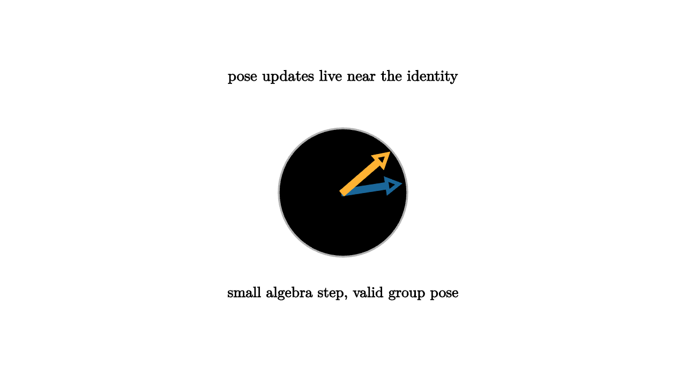

Optimization on Groups for Vision and Robotics
A camera pose is not a six-number vector in the most literal sense. It is a rigid transformation: a rotation and a translation. The set of all such poses is SE(3), a Lie group. When a vision algorithm refines a pose, it should preserve the fact that rotations remain rotations. Lie groups give a clean way to do that.
The common pattern is local update, global retraction. Start with a current pose T. Compute a small correction xi in the Lie algebra. Exponentiate xi to a small group motion, then compose it with T. The optimizer can solve a linearized problem in a vector space while the state remains on the curved group.

source
mesh scene = [
center{1.35u} Text("pose updates live near the identity", 0.64),
stroke{LIGHT_GRAY, 2} Circle(0.75),
stroke{BLUE, 4} Arrow([0, 0, 0], [0.65, 0.1, 0]),
stroke{ORANGE, 4} Arrow([0, 0, 0], [0.52, 0.45, 0]),
center{1.18d} Text("small algebra step, valid group pose", 0.62)
]Bundle adjustment is a central example. We have many camera poses and many 3D points. Each camera observes some points in images. The algorithm adjusts poses and points so projected points match measured pixels. Translations and 3D points are vector-like, but rotations are constrained. Updating rotations through the Lie algebra avoids drifting away from SO(3).
source
let target = [0.85, 0.4, 0]
let Pose = |step| {
let cam = [-1.2 + 0.55 * step, -0.35 + 0.25 * step, 0]
return [
center{cam} fill{alpha{0.22} BLUE} stroke{BLUE, 3} Triangle([-0.18, -0.12, 0], [0.18, -0.12, 0], [0, 0.18, 0]),
center{target} fill{WHITE} stroke{ORANGE, 2} Circle(0.09),
stroke{TEAL, 3} Arrow(cam, target)
]
}
"Residual"
mesh title = center{1.35u} Text("optimize by composing small motions", 0.62)
mesh diagram = Pose(0)
mesh caption = center{1.18d} Text("the residual pulls the pose through SE(3)", 0.62)
play Fade(0.7)
play Write(0.7)
"Update"
diagram = Pose(1)
play Lerp(1.2)Robotics uses the same pattern for state estimation and control. A mobile robot integrates wheel odometry, inertial measurements, lidar scans, and camera features. Each sensor suggests a correction to the robot's pose. The state estimate lives on SE(2) or SE(3). Filters and smoothers use tangent-space errors while maintaining group-valued states.
Deep learning has also begun to use these structures. Equivariant neural networks respect symmetry by design. If input data rotates, the internal representation transforms predictably. This can reduce data requirements and improve generalization in molecular modeling, physical simulation, medical imaging, and 3D perception. Lie groups describe the continuous symmetries these networks build into their layers.
Graphics and animation benefit too. Interpolating rotations with group-aware methods avoids distortions from naive coordinate interpolation. Character rigs, camera paths, and rigid body simulations all need smooth orientation changes. The exponential and logarithm maps provide tools for blending, averaging, and correcting transforms.
The philosophical point is practical. Many algorithms look linear because linear algebra is the language of computation. Many states are nonlinear because geometry imposes constraints. Lie groups allow both facts to coexist. Work locally in a tangent vector space. Return to the group for the actual state. Compose transformations with the group law.
The modern geometry lesson is that structure is an optimization aid. Respecting the group usually makes algorithms cleaner, more stable, and more interpretable. The pose remains a pose, the rotation remains a rotation, and each correction has a geometric meaning.